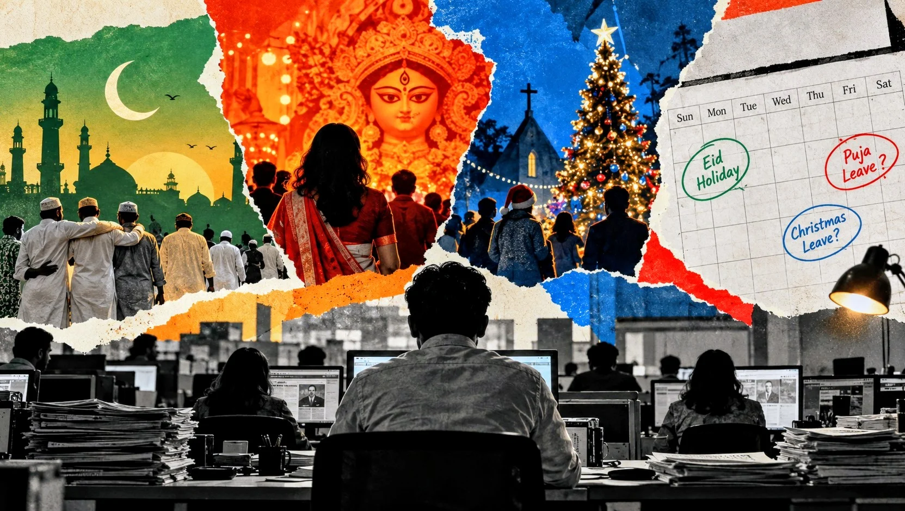

I get Eid off. Do my journalist colleagues get the same for Puja?
If Eid is already built into the newsroom calendar, why should colleagues celebrating Puja and other major festivals have to spend their earned leave?


On Eid, I never apply for leave. I do not count my earned leave days or wonder whether the desk can spare me. The newsroom calendar has already answered the question for me.
A colleague celebrating Durga Puja may have to do something I do not: ask for time off around the festival and, in some newsrooms, use earned leave to get it. A Christian or Buddhist colleague may face the same problem around an important religious festival.
That difference is easy to miss when you are on the side that never has to think about it. I had not thought seriously about it either.
The government's move to extend this year's Durga Puja break made me look again at our own calendar. October 20 is already a holiday for Maha Navami and October 21 for Bijoya Dashami. Adding October 22 would link those days to the Friday-Saturday weekend and give government employees five consecutive days off.
Newspapers work differently. In March, NOAB announced a five-day holiday for newspaper offices for Eid-ul-Fitr, from March 19 to 23. For employees covered by that closure, the days were already part of the office calendar. They did not have to come from earned leave.
That is the distinction that matters.
Publicly reported NOAB notices over the years show newspaper closures for Muslim religious occasions including Ashura, Shab-e-Barat and Eid-e-Miladunnabi, apart from the two Eids. Pahela Baishakh and May Day have also been observed as newspaper holidays.
In the newsroom calendars I have worked under, I have not seen the same kind of NOAB-declared closure around Durga Puja, Christmas or a Buddhist festival. Colleagues who need more time around those occasions may have to arrange it through their own leave.
There is an important counterpoint. Hindu, Buddhist and Christian journalists also get the Eid break when their office is closed. So this is not about counting total days off or claiming that one group necessarily receives fewer holidays. It is about whether employees get protected time for the religious occasions they themselves observe.
It is also natural that an industry calendar will reflect the festivals observed by most of its workforce and readers. Eid involves large-scale travel and family gatherings, and newspapers have practical reasons to plan around it. That is not the complaint.
The question is what happens to the colleague at the next desk.
An office holiday and a day taken from earned leave are not the same thing. If I can observe Eid without touching my earned leave, while a colleague has to use earned leave to spend Puja, Christmas or another principal religious festival with family, the workplace is accommodating our festivals differently.
This is not a demand that every festival shut down every newspaper. Journalism cannot operate that way. Television and online desks continue through Eid, reporters remain on duty and breaking news does not wait. Nor is this an argument for reducing Eid holidays.
There is a simpler option. Media organisations could reserve a small number of paid festival-leave days for employees whose principal religious occasions fall outside common office closures. Employees could identify those days in advance. Newsrooms could use the same rosters, duty swaps and compensatory arrangements they already rely on during holidays.
Some organisations may already make such arrangements. But a colleague's ability to observe a major religious festival should not depend only on an individual leave request being accommodated each year. Putting the arrangement in policy would make the expectation clear for both employees and editors.
The point is not identical day counts for every faith. Festivals differ, and so do newsroom needs. The point is that employees should have a reasonable chance to observe the principal festivals of their faith without having to use earned leave for a purpose that the common calendar already covers for others.
For years, I never had to think about whether I could take time off for Eid. The calendar had already settled that question for me.
Some of my colleagues still have to ask the question every year.
They should not have to.